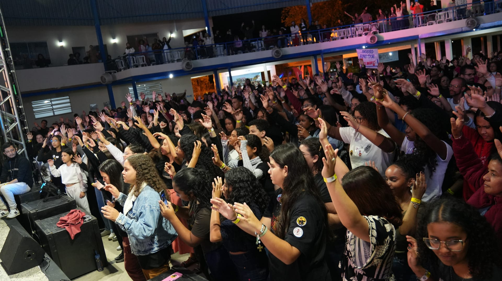
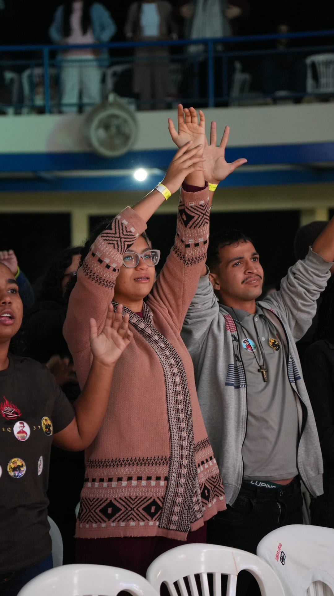
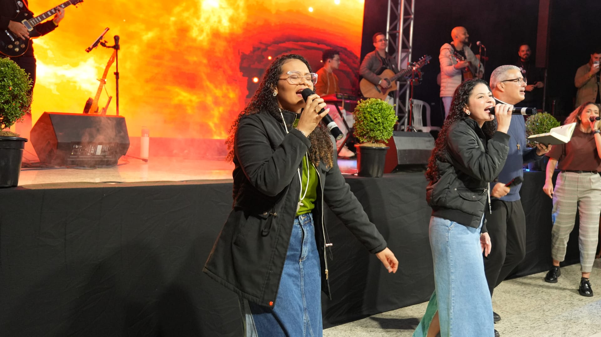
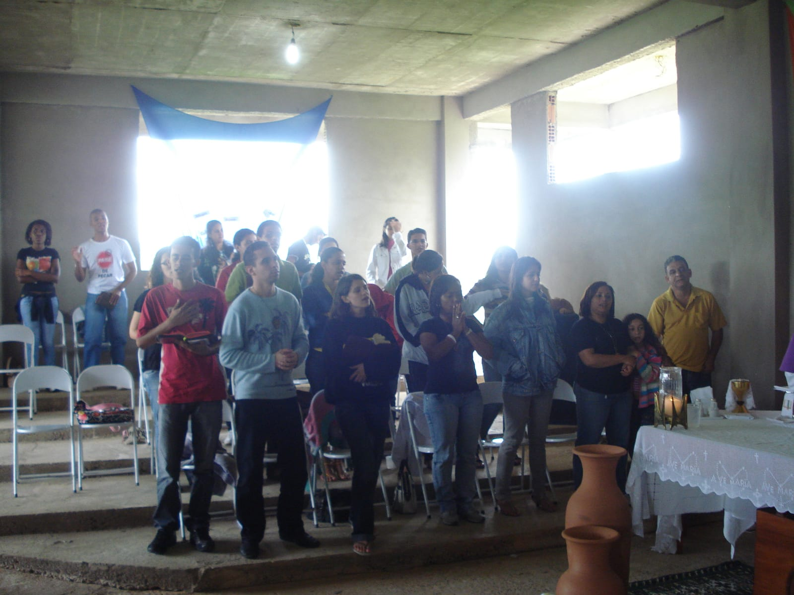

A Comunidade
Nascida de um grupo de oração em Itaperuna, em 2002. Comunidade de Aliança desde 2007.
Comunidade de Aliança
A Trindade Santa nasceu em Itaperuna, no noroeste fluminense. Foi reconhecida pela Diocese de Campos em 2013 e recebeu o decreto definitivo em 2018.
Hoje serve no Rio de Janeiro, em Minas Gerais e no Espírito Santo, com missionários até nos Estados Unidos. Seus sinais são o louvor, a adoração e a comunhão.


Nosso carisma
Deus Pai
As mãos que sustentam o mundo.
Deus Filho
A cruz.
Espírito Santo
A chama.
À Trindade Santa, o nosso louvor e adoração!
Uma caminhada de fé
Reginaldo Braz de Carvalho
Reginaldo Braz de Carvalho · Fundador

Amor que vira ação
A Associação Trindade Santa é a própria comunidade, organizada para servir: os serviços sociais e a evangelização dos jovens.
Conheça e doe